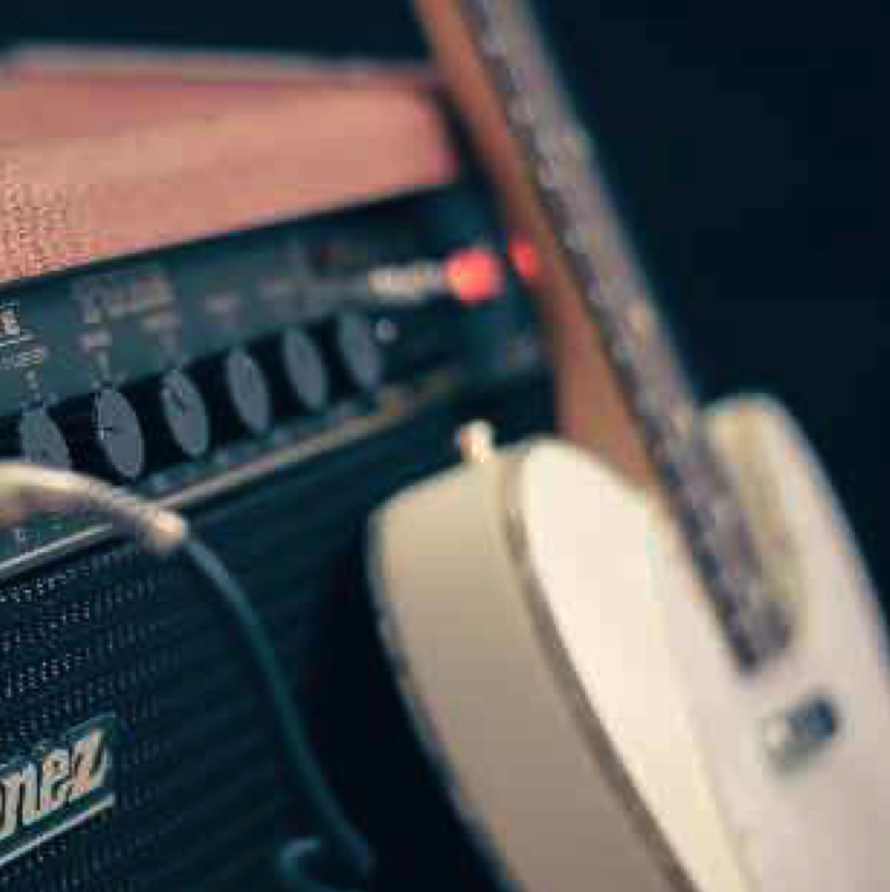

<!DOCTYPE html>
<html lang="en">
<head>
  <meta charset="UTF-8">
  <meta name="viewport" content="width=device-width, initial-scale=1.0">
  <meta http-equiv="X-UA-Compatible" content="ie=edge">
  <link rel="stylesheet" href="./style.css">
  <script src="./blur.js"></script>
  <script src="./stackBlur.js"></script>
  <title>Document</title>
  <script>
  </script>
</head>
<body>
      <!-- <svg height="200px" width="200px" overflow="hidden">
        <defs>
          <filter id="blur" height="110%" width="110%" y="-5%" x="-5%">
            <feGaussianBlur stdDeviation="3"></feGaussianBlur>
          </filter>
        </defs>
        <image width="200px" height="200px" xlink:href="./avatar.png" filter="url(#blur)"></image>
      </svg> -->
<!-- <svg height="0" width="0" version="1.1" xmlns="http://www.w3.org/2000/svg" xmlns:xlink="http://www.w3.org/1999/xlink">
  <defs>
      <filter id="blur">
      <feGaussianBlur stdDeviation="3"></feGaussianBlur>
    </filter>
  </defs>
</svg> -->
  <!-- <div class="origin">
    <div class="image-wrapper">
      <div class="image-cover">
        
      </div>
    </div>
  </div> -->
  <div class="blur">
    <div class="image-wrapper">
      <div class="image-cover">
        
      </div>
    </div>
  </div>
  
  <canvas id="blur-canvas"></canvas>
  <div id="ie10p">
      <!-- <svg height="200px" width="200px" overflow="hidden">
        <image width="200px" height="200px" xlink:href="./avatar.png" filter="url(#blur)"></image>
      </svg> -->
  </div>
  <script>
    stackBlurImage('blur-img', 'blur-canvas', '3px', true);
  </script>
</body>
</html>